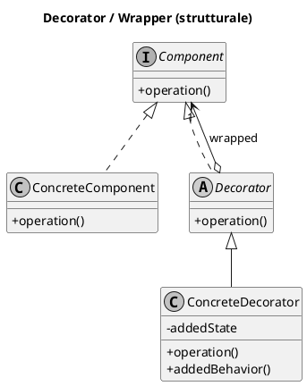

Domanda aperta 1 prova reale· processi · ~5 pt · (06/06/2025)
Secondo C. Larman «il metodo a cascata è pratica mediocre per la maggior parte dei progetti software […] caratterizzato da una minore produttività, maggiori percentuali di difetti e stime iniziali di tempi e costi che variano notevolmente dai valori finali».
a) Motiva l'affermazione (max 3 righe). b) Spiega la principale differenza tra cascata e sviluppo incrementale rispetto alle attività di specifica, sviluppo, convalida e al feedback.
Mostra soluzione modello
b) Nel modello a cascata specifica, sviluppo e convalida sono fasi distinte e sequenziali: ciascuna termina prima della successiva e il feedback è solo a valle. Nello sviluppo incrementale le stesse attività si intrecciano e si ripetono su incrementi successivi del sistema, con feedback continuo del cliente ad ogni incremento e maggiore capacità di assorbire i cambiamenti dei requisiti.
Domanda aperta 2 generata· GRASP + pattern GoF · ~6 pt
a) Descrivi il pattern GRASP Controller: qual è il problema che risolve, quali sono le due alternative tipiche per scegliere il controller e perché un controller non deve diventare un «bloated controller». b) Descrivi poi il pattern GoF Decorator (Nome / Problema / Soluzione) e disegnane la struttura UML.
Mostra soluzione modello + UML
b) Decorator (Wrapper), pattern strutturale. Problema: aggiungere responsabilità a un oggetto in modo dinamico, come alternativa flessibile all'ereditarietà, evitando l'esplosione di sottoclassi. Soluzione: il Decorator implementa la stessa interfaccia Component, contiene (wrappa) un Component e ne estende il comportamento prima/dopo aver delegato all'oggetto avvolto; i decorator si compongono a catena.

All'esame reale il pattern aperto cambia ogni volta (qui spesso Decorator/State/Observer): allenali tutti col Puzzle UML e con le Flashcard.